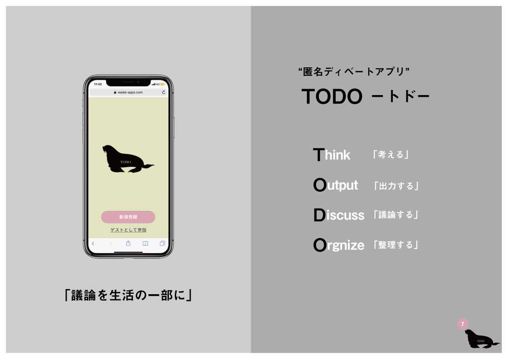
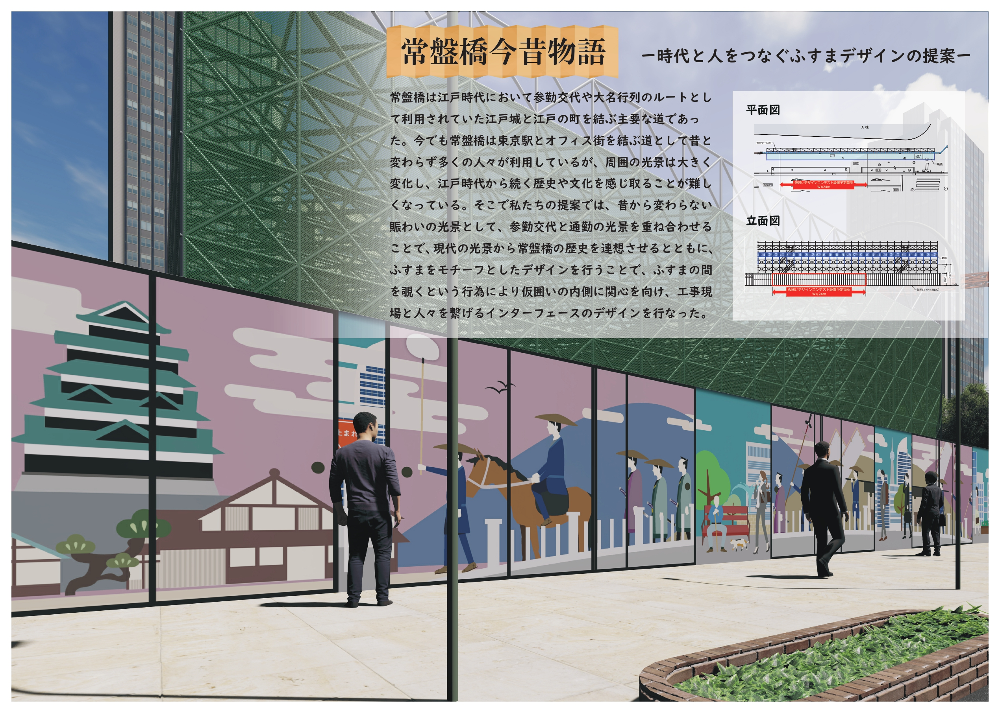
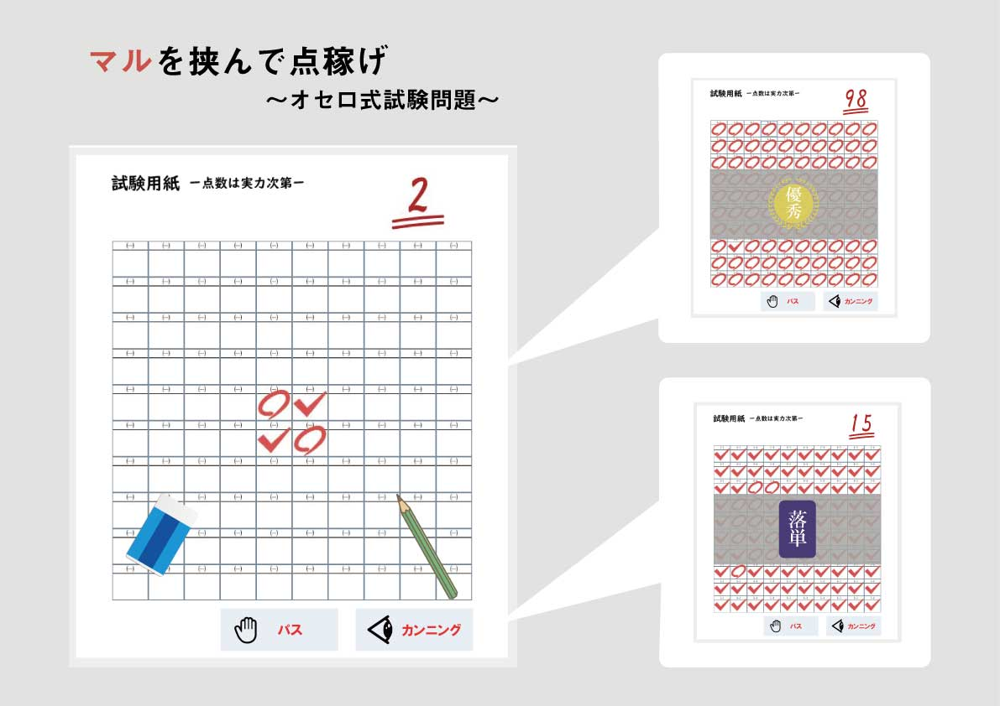
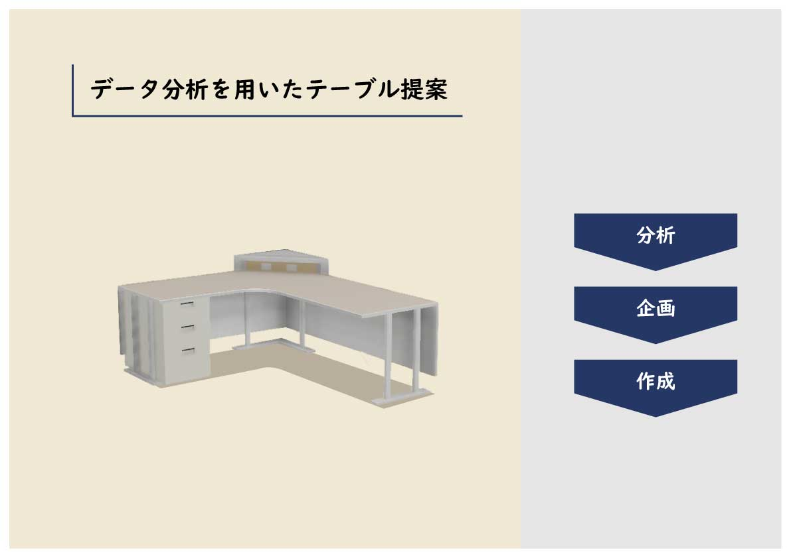
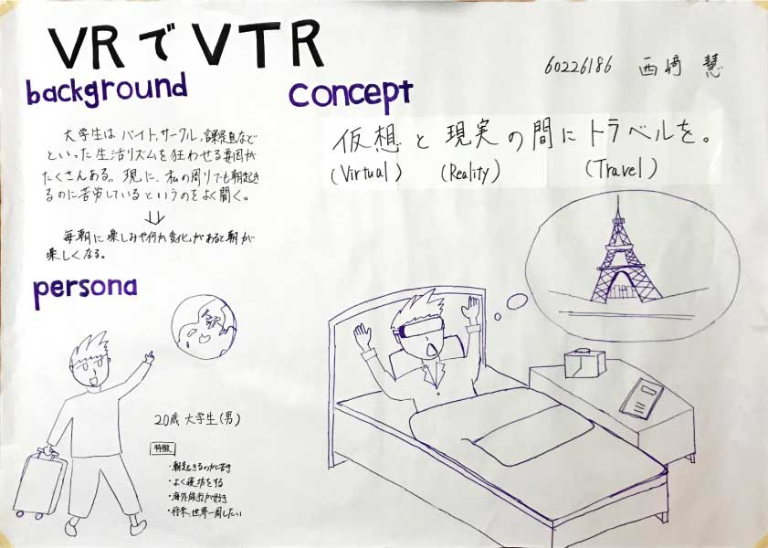
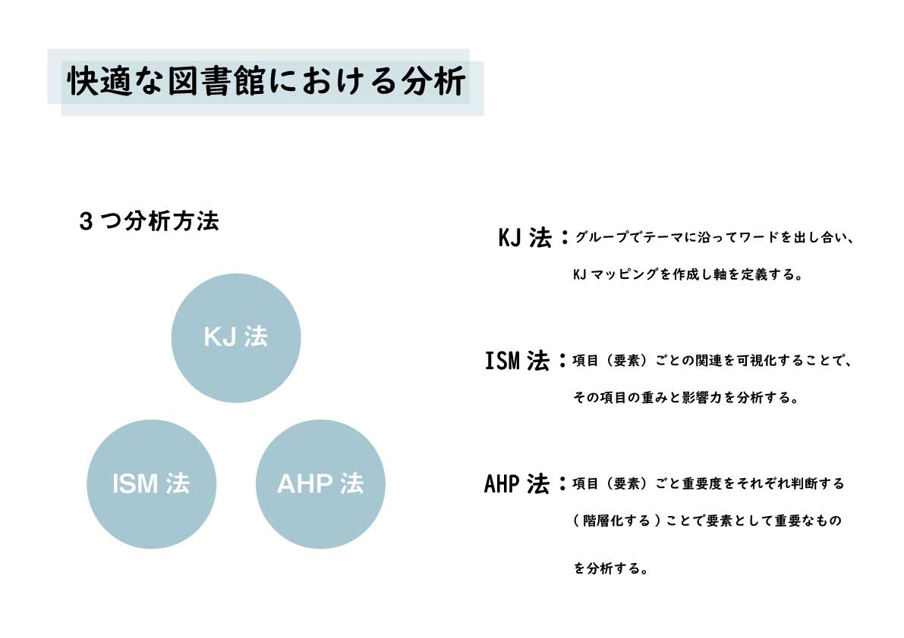
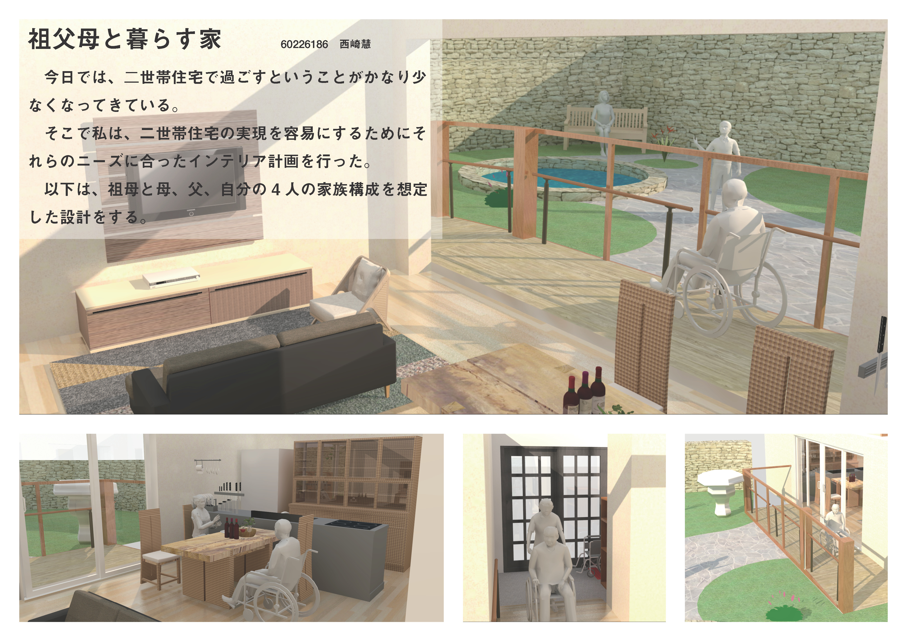

- PROFILE :
- 西崎慧 Nishizaki Kei
和歌山県和歌山市 出身
和歌山大学システム工学部メディアデザインメジャー 卒業
- CONTACT :
- nszkki.19981116@gmail.com
- ADDRESS :
- 大阪府大阪市
Osakashi, Osakafu Japan


■作品概要
この作品はデザイン情報総合演習という演習の授業で作ったものです。各グループ3人で1からシステムの企画を行い、限られた時間の中で実装を行い講評会で披露するということを行った。
私たちが提案したシステムは匿名でディベートを行うことができるWebアプリケーションである。背景として、日本人は講義や人前で発言することが難しいということがあげられる。
そこで”匿名”というキーワードから普段自発的に発言できない人や周りに議論したいテーマを話し合いたい人がいない人をターゲットとし、「議論を生活の一部に」というコンセプトのもと、実生活での発話のハードルを下げるということを目的とするシステムの提案を行った。
システムを制作するにあたって私はUIを主として担当した。匿名ということもあり、チームへの帰属意識を促せるようなデザインを意識し、シンプルで見やすいようなUIも意識した。
この作品を通して、技術の向上はもちろんそれと同時に企画力がさらに上がった。

■作品概要
この作品は全国建設業協同組合連合会（全建協連）が主催する「東京の現場を学生が彩る仮囲いデザインコンテスト」に応募した作品で、“工事中と人々をつなぐインターフェイス”というテーマのものであった。
私たちが提案したのは“常盤橋今昔物語”と称した今と昔をふすまというインターフェイスを通じてデザインしたものである。
工事中と人々をつなぐということを私たちは今と昔の働く人の姿の対比を表現することで出勤する人にとっての働き甲斐を与えると考えた。
またふすま童話にある鶴の恩返しでもあった中のものを隠すという役目があるように、仮囲いの中にある建造物を期待させる効果が得られると考え、ふすまのデザインを提案した。
作品を提案するにあたってアイデアを出し合ったりという作業を発想法を多く行った。これらを行う上でアイデアは発散し収束していくという作業が非常に重要であることがわかった。
以上のようにこの作品を通してテーマに対してのアイデアの考え方、それをどのようにまとめていくかというグループワークにおける根本を見直すことができた。

■作品概要
この作品は情報システム開発演習という授業を抽選で外れたため自主的に制作したものである。授業資料のスライドはWeb上でアップされている為それを参考に制作した。
内容としては Javaを用いてネットワーク対戦型のゲームをテーマに与えられ最終的には講評会を行い順にを付けるというものであった。
私は授業には参加できないので講評会には参加できなかったが、テーマに沿ったオセロを基盤としたゲームを制作した。ゲームは大学生をターゲットとしたもので単位取得を目指してマルで囲ってペケを減らすというシンプルなゲームである。カンニングボタンを設けることで大学生らしい一か八かを想定した機能を付けた。UIに関しては実際の紙媒体のテスト用紙を意識して作った。
この作品を通して、主にプログラミングの知識と経験を得ることができた。また、自主的に取り組んだ分、上手く実行されないやエラーが多々でることがあり苦労したがそれらを用いた知識は通常以上に身についたと思う。
この作品を通して、技術の向上はもちろんそれと同時に企画力がさらに上がった。

■作品概要
この作品はただ単にテーブルのデザインを考えて提案するのではなく、既存のテーブルを分析したうえで今の時代に必要とされているテーブルとは何かということを考え実際にCAD ツールを用いてモデリングを行うということを行い提案したものである。
分析はデータを収集しそれぞれのテーブルにおけるクラスター分けをし、その中でターゲットを決定しレビューなどをもとにテーブルのコンセプトやデザイン案を具体化していった。
今回はオフィステーブルを焦点としたため、機能性とサイズを重視したデザインとなった。背景としてはIT化が進む中でPC作業を前提としたテーブルは重要となってくると考えオフィステーブルとした。
またCAD を使用してサイズなども実際の大きさを想定し作成していった。
この作品を通して分析し、背景などから実際の問題点などを発見し解決することで、企画提案するにおいての課題解決能力を養うことができたと考える。

■作品概要
この作品は手書きでのデザイン実習を想定した演習で「朝起きることが楽しくするシステム」をテーマとするシステムの提素が課題で作成したものである。
絵で企画提案を行うということは初めてで、絵は得意ではなかったのですが短時間で相手にシステムのイメージしてもらうにはアナログ的な手書きも大事である
と考えた。
今回私が提案したのは朝起きるのが苦手で海外旅行が趣味である大学生をペルソナとした、HMD を用いた海外への疑似体験を提供するというシステムである。
「仮想（Virtual）と現実（Reality）の間にトラベル（Travel）を」というコンセプトをもとにシステムの名前を “VRでVTR”と名付けた。
これを提案することで毎朝に変化を与えることができ、起きることへのモチベーションへとつながると考えた。
また、今後の発展として HMDの薄型化でアイマスク代わりとなりより効率の良い睡眠を提供できると考える。
この作品と通して、短時間で相手に伝えるためすべを得ることができた。
また反省点として絵に力を注げて字が醜くなってしまったため、より見やすいレイアウトや字体に以降、気を付けたい。

■作品概要
この作品はデザイン企画論という授業の中で行ったあるテーマについての分析を行ったものである。
テーマは自分たちで考え私は「過ごしやすい図書館」をテーマに KJ法をはじめとする3つの分析手法を行い過ごしやすい図書館についての機念やそれに影響する要素を考えた。
3つの分析においてKJ法は3人グループでそれ以外の2つは個人で行うものであった。
それぞれ分析を行うにあたり過ごしやすい図書館とは内装のデザインや雰囲気に非常に影響があることがわかり、一方で外装や立地条件はあまり影響しないことが判明した。
この作品を通して今回は過ごしやすい図書館というテーマであったが、他のプロダクトデザインやシステムの提案をする際にも同じような分析が利用できるのと同時に分析をすることの重要性がわかった。
今後、こういった分析を更に利用しそれらをもとにシステム提案などを行っていきたい。

■作品概要
この作品はインテリアデザイン論という講義の中で作成したもので、各自決めたペルソナに対しての部屋をモデリングしそれを A3のコンセプトボード二枚にまとめて講評会を行うというものである。
今回ペルソナは「二世帯で暮らす家族」とレインテリア計画を行った。家具もすべてではないが自分でモデリングしたものを置いている。
ペルソナに対して“祖母が暮らしている”ということに主に焦点を当てることでバリアフリーを意識したインテリアを提案した。
具体的には車椅子が通れるようなスペース、ドアは全て引き戸と、手すりを要所に設置した。
また、コンセプトボードは家族全員が楽しく過ごしているように庭で和気あいあいとした雰囲気をベースと親近感を持たせた。
この作品では、ペルソナに対しての明確な提案を行うことができた。またコンセプトボードのような少ない枚数で相手にどのように伝えるかをも考えさせられた。
これらを通じてお客様に対してのニーズを満たす能力、さらに相手にどのようにわかりやすく伝えられるかということを学んだ。